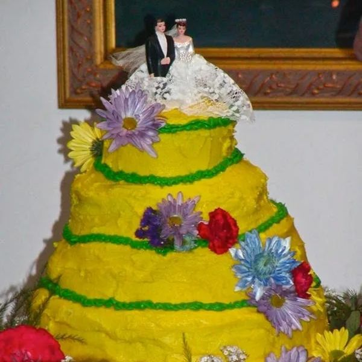

The Dark Side of DIY
Show Notes
In this episode of Wedding Police, Penny and Jim investigate what happens when “We can totally make that ourselves!” turns into a five-alarm wedding emergency. From Pinterest-inspired centerpieces that wilt before cocktail hour to homemade cakes that lean harder than the best man after open bar, the duo breaks down how too many DIY projects can send even the most organized couple into chaos.
Penny lays out the emotional side — why couples overcommit in the name of saving money or making it “personal” — while Jim runs the numbers on what DIY really costs in time, stress, and last-minute panic. Along the way, they share real-life wedding crime scenes: glue-gun burns, unfinished signage, missing boutonnières, and the cousin who swore he could DJ with an iPod shuffle.
The verdict? DIY can be meaningful — but when your to-do list is longer than the guest list, you may be planning your own stress parade.
Tune in as the Wedding Police issue citations for overconfidence, underestimating timelines, and felony-level glitter use.
🚨 Never Miss a Case
New episodes every week. Follow The Wedding Police so the next one lands in your feed.
Enjoying it? A quick rating on Apple Podcasts or Spotify helps new couples find the show.